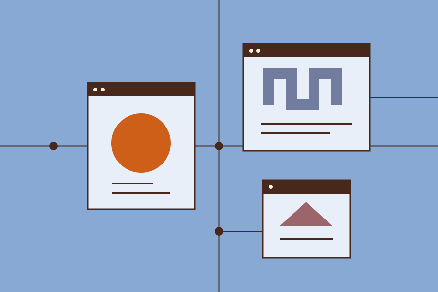

A website can be a place, not a feed.
What happens when we build a little corner of the internet around what we care about, and leave the door open?

A place to return to
Before I knew what a personal website was supposed to do, I liked knowing where to find one. A friend kept a page of sketches. Someone else wrote about the buses in their town. The addresses felt like places, and returning was part of the pleasure.
A feed is good at bringing something new to the top. A place is good at letting something stay. Neither is the whole internet, but we have become unusually practiced at making the first and a little out of practice at making the second.
This is a fictional story about an ordinary wish: to make a small public home for things that do not need to compete for attention. A page of notes. A shelf of links. An essay that can take its time.
Leave a door open
The best invitation is often a useful link. It tells a visitor that the site has neighbors, and that leaving it is not a failure. A good reading list can say more about a person than an elaborate biography.
Navigation is a kind of hospitality. Give the visitor a way home, a name for each room, and some indication of what lies beyond the next door. A heading should help them decide whether to stay. A link should tell them where it goes.
None of this requires a complicated system. A document with a title, a few paragraphs, and a handful of considered links already has the beginnings of a place.
A page you can maintain is more generous than a grand system you have abandoned.
Keep it small enough to care for
There is a temptation to build the entire future before publishing the first page. An archive, a search engine, a newsletter, a perfect taxonomy: all useful, all capable of postponing the simple act of putting words somewhere.
A smaller structure makes a different promise. It says that this part works, that its links have been followed, and that its maker can still understand it. A page you can maintain is more generous than a grand system you have abandoned.
We can start with a few ordinary practices: write a descriptive title, give images useful alternatives, make the text comfortable to read, and check the page on a small screen. These are acts of care that survive a change of platform.
A web with neighbors
A personal site need not be an island. Its independence is what makes its connections interesting. We can point to one another without agreeing on the same software, the same schedule, or the same definition of a finished thought.
Perhaps the thing worth bringing back is not an old visual style but a feeling of possibility. The web can contain many different kinds of places. We can still make one, leave the door open, and see who comes by.